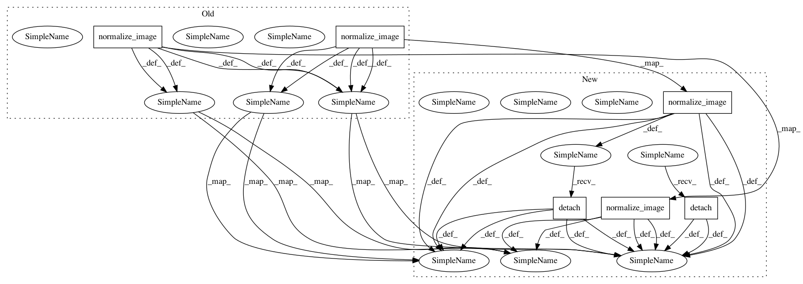

8a04fa2c91f52a9c551849812d450079e667b16a,src/model.py,DRIT,assemble_outputs,#DRIT#,439
Before Change
def assemble_outputs(self):
images_a = self.normalize_image(self.real_A_encoded)
images_b = self.normalize_image(self.real_B_encoded)
images_a1 = self.normalize_image(self.fake_A_encoded)
images_a2 = self.normalize_image(self.fake_A_random)
images_a3 = self.normalize_image(self.fake_A_recon)
images_a4 = self.normalize_image(self.fake_AA_encoded)
images_b1 = self.normalize_image(self.fake_B_encoded)
images_b2 = self.normalize_image(self.fake_B_random)
images_b3 = self.normalize_image(self.fake_B_recon)
images_b4 = self.normalize_image(self.fake_BB_encoded)
row1 = torch.cat((images_a[0:1, ::], images_b1[0:1, ::], images_b2[0:1, ::], images_a4[0:1, ::], images_a3[0:1, ::]),3)
row2 = torch.cat((images_b[0:1, ::], images_a1[0:1, ::], images_a2[0:1, ::], images_b4[0:1, ::], images_b3[0:1, ::]),3)
return torch.cat((row1,row2),2)
def normalize_image(self, x):
After Change
def assemble_outputs(self):
images_a = self.normalize_image(self.real_A_encoded).detach()
images_b = self.normalize_image(self.real_B_encoded).detach()
images_a1 = self.normalize_image(self.fake_A_encoded).detach()
images_a2 = self.normalize_image(self.fake_A_random).detach()
images_a3 = self.normalize_image(self.fake_A_recon).detach()
images_a4 = self.normalize_image(self.fake_AA_encoded).detach()
images_b1 = self.normalize_image(self.fake_B_encoded).detach()
images_b2 = self.normalize_image(self.fake_B_random).detach()
images_b3 = self.normalize_image(self.fake_B_recon).detach()
images_b4 = self.normalize_image(self.fake_BB_encoded).detach()
row1 = torch.cat((images_a[0:1, ::], images_b1[0:1, ::], images_b2[0:1, ::], images_a4[0:1, ::], images_a3[0:1, ::]),3)
row2 = torch.cat((images_b[0:1, ::], images_a1[0:1, ::], images_a2[0:1, ::], images_b4[0:1, ::], images_b3[0:1, ::]),3)
return torch.cat((row1,row2),2)
def normalize_image(self, x):
In pattern: SUPERPATTERN
Frequency: 4
Non-data size: 6
Instances
Project Name: HsinYingLee/DRIT
Commit Name: 8a04fa2c91f52a9c551849812d450079e667b16a
Time: 2018-07-28
Author: hytseng0509@gmail.com
File Name: src/model.py
Class Name: DRIT
Method Name: assemble_outputs